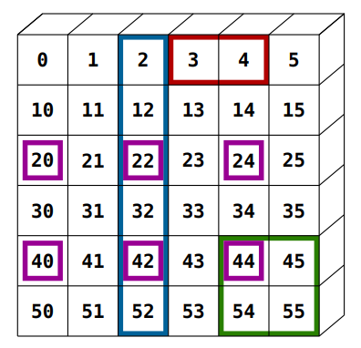
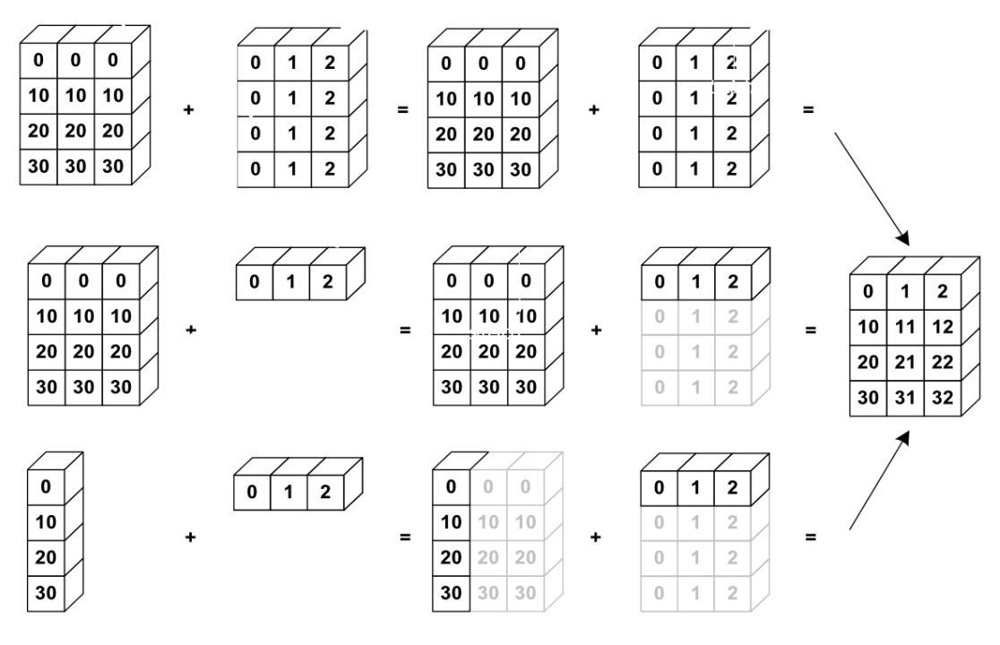
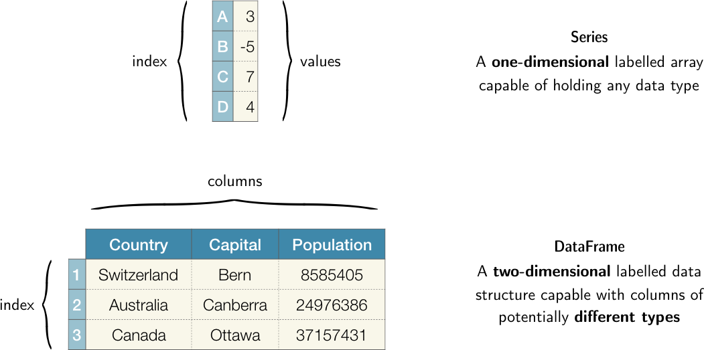

Clase 05 - Bibliotecas externas
Programación Aplicada II
2026-04-10
Contenido
Modularidad
La modularidad es un principio de diseño que promueve la división del programa en componentes independientes, cada uno encargado de una tarea específica. Esta práctica permite que el código sea:
- Más legible y fácil de entender.
- Más mantenible, ya que cada parte puede probarse y corregirse por separado.
- Más reutilizable, facilitando la creación de bibliotecas personales o empresariales.
En Python, esto se logra mediante:
- Funciones y clases: bloques de código con nombre que realizan una tarea.
- Módulos: archivos
.pyque agrupan funciones y clases relacionadas. - Paquetes (Bibliotecas): carpetas que contienen múltiples módulos organizados.
Funciones
- Ya hemos revisado las funciones en este curso, pero como recordatorio: las funciones permiten encapsular lógica para ser reutilizada.
- En Python se definen con
def. - Algunas buenas prácticas cuando programemos funciones:
- Utilizar nombres descriptivos.
- Documentar con docstrings.
- Evitar funciones largas o con muchas responsabilidades.
¿Cómo podemos crear un módulo?
- Un archivo
.pypuede contener múltiples funciones, clases, variables y expresiones. - Este archivo se puede importar en otros scripts como un módulo.
¿Dónde debe estar el archivo .py para que pueda ser importado?
Para importar un módulo (archivo.py) desde otro script (main.py), ambos deben cumplir al menos una de estas condiciones:
- Estar en el mismo directorio.
- Estar en una subcarpeta accesible con un archivo
__init__.py(si es un paquete). - Estar en una carpeta incluida en la variable de entorno
PYTHONPATH.
| Caso | ¿Como importar el módulo? |
|---|---|
| 1. Archivos en mismo directorio | import archivo |
| 2. Archivos en subcarpeta | from carpeta import archivo y usar __init__.py |
| 3. Archivos externos | Evitar, o usar sys.path.append() con precaución |
Caso 1: Módulos en la misma carpeta
mi_proyecto/
├── main.py
└── operaciones.pyContenido de operaciones.py:
Contenido de main.py:
Caso 2: Módulo en una subcarpeta (forma recomendada en proyectos reales)
mi_proyecto2/
├── main2.py
└── herramientas/
├── __init__.py
└── operaciones2.pyherramientas/es una subcarpeta que actúa como paquete.- El archivo
__init__.pypuede estar vacío, pero su presencia permite tratar la carpeta como un paquete Python (en versiones modernas puede no ser estrictamente necesario, pero es buena práctica).
Contenido de main2.py:
Contenido de herramientas/operaciones2.py:
Caso 3: ¿Qué pasa si el módulo está en otra carpeta fuera del proyecto?
Por ejemplo:
proyecto3/
├── main3.py
externo/
└── operaciones3.pyAquí main3.py no puede importar directamente operaciones.py a menos que se modifique la ruta de búsqueda (sys.path).
Solución:
NOTA: Este método es válido, pero no recomendado. Es mejor mantener los módulos dentro del mismo árbol del proyecto.
Uso de __name__ == "__main__"
En Python, cada módulo tiene una variable especial llamada __name__.
- Si se ejecuta el archivo directamente:
__name__ == "__main__" - Si se importa el archivo:
__name__ == "nombre_del_modulo"
Esto permite que el archivo se comporte diferente al ser ejecutado o importado. Por ejemplo:
Si operaciones.py se ejecuta directamente, imprime 5. Si se importa desde otro archivo, ese bloque no se ejecuta.
Paquete (biblioteca)
- Un módulo es un archivo
.pyque contiene funciones, clases y/o constantes. - Un paquete o biblioteca es una colección de uno o varios módulos diseñados para cubrir una necesidad particular (como álgebra lineal, análisis estadístico, visualización, etc.).
- Por ejemplo:
Note
math.py es un módulo de funciones matemáticas básicas.
Note
NumPy es una biblioteca completa que incluye módulos como numpy.linalg, numpy.fft, etc.
Instalación de bibliotecas externas
Las bibliotecas externas no forman parte del entorno estándar de Python, por lo que deben instalarse usando un gestor de paquetes como pip o mediante entornos como Anaconda.
- Usando
pip: pip install numpy pandas - Usando Anaconda: conda install numpy pandas
Una vez instaladas, se importan en el código:
Es común usar estos alias para facilitar la escritura de código.
NumPy: Numerical Python
NumPy (Numerical Python) es una biblioteca para la computación científica. Fue creada por Travis Oliphant en 2005 como unificación de dos proyectos anteriores: Numeric y Numarray.
Sus contribuciones principales son:
- Un nuevo tipo de objeto: el
ndarray(N-dimensional array), que permite almacenar y operar sobre grandes volúmenes de datos numéricos de forma eficiente. - Un conjunto de funciones matemáticas y estadísticas optimizadas para operar sobre arreglos.
- Rutinas de álgebra lineal, transformadas de Fourier y generación de números aleatorios.
Imagen de www.linkedin.com
¿Por qué un NumPy ndarray es más eficiente que las listas de Python?
Cuando se utilizan listas de Python para manejar grandes cantidades de datos numéricos, se presentan varias limitaciones:
- Las listas son estructuras heterogéneas: pueden contener elementos de distintos tipos, lo que implica mayor consumo de memoria por elemento.
- Las operaciones aritméticas entre listas requieren ciclos explícitos y no están diseñadas para el cómputo numérico.
- No se aprovechan las instrucciones vectorizadas del procesador (SIMD), que permiten aplicar una operación sobre múltiples datos en paralelo.
Por ejemplo, supongamos que necesitamos duplicar el valor de cada elemento en una lista de números. ¿Funcionaría el siguiente código para nuestro propósito?
El resultado anterior concatena la lista consigo misma, no es la operación deseada. Si en cambio utilizamos un ndarray de NumPy:
El operador * actúa elemento por elemento sobre el arreglo completo, sin necesidad de un ciclo explícito. Esta capacidad de operar directamente sobre estructuras de datos se denomina vectorización.
Warning
Nota: Para operaciones sobre millones de elementos, NumPy puede ser entre 10 y 100 veces más rápido que un ciclo equivalente en Python puro, ya que su núcleo está implementado en C y Fortran y delega operaciones en rutinas BLAS/LAPACK altamente optimizadas.
¿Qué es un ndarray?
Un ndarray es la estructura de datos central de NumPy. Se caracteriza por ser:
- Multidimensional: soporta vectores (1D), matrices (2D), tensores (3D o más).
- Homogéneo: todos sus elementos tienen el mismo tipo de dato (
dtype), lo que permite almacenarlos en un bloque de memoria contiguo y acceder a ellos de manera eficiente. - Definido por su forma (
shape): una tupla que indica el número de elementos en cada dimensión.
Existen diversas funciones para construir un ndarray:
| Función | Descripción | Ejemplo |
|---|---|---|
np.array(lista) |
Convierte una lista en arreglo | np.array([1, 2, 3]) |
np.zeros((m, n)) |
Arreglo de ceros de forma \((m, n)\) | np.zeros((2, 3)) |
np.ones(n) |
Arreglo de unos de \(n\) elementos | np.ones(5) |
np.arange(a, b, paso) |
Rango con paso fijo, similar a range |
np.arange(0, 10, 2) |
np.linspace(a, b, n) |
\(n\) puntos equidistantes en \([a, b]\) | np.linspace(0, 1, 5) |
np.random.rand(m, n) |
Valores aleatorios uniformes en \([0, 1)\) | np.random.rand(2, 3) |
np.random.randn(m, n) |
Valores con distribución normal estándar | np.random.randn(3, 3) |
np.random.randint(a, b, size) |
Enteros aleatorios en \([a, b)\) | np.random.randint(0, 10, 5) |
Veamos algunos ejemplos:
¿Qué pasa si…?
- Llamas
np.ones((2, 3)) * 5? ¿Qué resultado esperas? ¿Por qué funciona sin un ciclo? - Construyes
np.array([1, 2, 3.0])? ¿Qué tipo de dato infiere NumPy para todo el arreglo? - Intentas
np.array([[1, 2], [3, 4, 5]])? ¿Qué ocurre y por qué?
Ejercicio (parte 1): construcción de arreglos
Note
A lo largo de esta sesión iremos construyendo la clase SensorVial. Este primer ejercicio corresponde a la generación de datos simulados con los que trabajaremos.
Supongamos que tenemos un sensor de tráfico en una calle. A lo largo del día, el número de vehículos que pasan no es constante: hay más tráfico, por ejemplo, a las 8 AM (gente yendo al trabajo) y a las 5 PM (gente regresando).
Escribe la función para simular ese fenómeno, es decir, producir 24 números (uno por hora) que sigan ese patrón.
En el archivo
algoritmos.pydentro de la carpetaejercicio-trafico/, implementa el método:
def generar_datos_sensor(id_est, semilla=None):
"""
Genera lecturas horarias simuladas para un sensor de tráfico.
Parámetros
----------
id_est : identificador de la estación (afecta la escala del tráfico).
semilla : semilla para reproducibilidad (opcional).
Retorna
-------
ndarray 1D de shape (24,) con dtype int.
"""Utiliza np.arange, np.exp, np.random.normal y np.clip.
'\n1. Generar un arreglo hrs de 1 a 24.\n2. Generar una func distribucion de coches bimodal, con picos en 8 y 17\n3. Evaluar la funcion en t\n5. Agregar ruido gaussiano\n6. Truncar los numeros negativos\n4. Convertir a enteros\n'Propiedades de un ndarray
Cuando creas un ndarray, puedes consultar sus características más importantes:
Forma: (2, 3)
Dimensiones: 2
Tamaño total: 6
Tipo de datos: int64Propiedades de un ndarray
Cuando se crea un ndarray, es posible consultar sus características a través de sus atributos:
Forma (shape): (2, 3)
Número de dimensiones: 2
Total de elementos: 6
Tipo de dato: int64
Bytes por elemento: 8
Memoria total: 48 bytesWarning
Nota: El atributo dtype determina cuánta memoria ocupa cada elemento. Usar int32 en lugar de int64 reduce a la mitad el consumo de memoria, lo que puede ser relevante cuando se procesan arreglos de millones de elementos.
Redimensionar arreglos
Es posible reestructurar un arreglo sin modificar sus datos, siempre que el número total de elementos se conserve. Esto se realiza con reshape:
Original: (24,)
Remodelado a (4, 6):
[[ 1 2 3 4 5 6]
[ 7 8 9 10 11 12]
[13 14 15 16 17 18]
[19 20 21 22 23 24]]Warning
Nota: reshape no copia los datos: devuelve una nueva vista del mismo bloque de memoria. Modificar el arreglo remodelado modifica también el original. Para una copia independiente se utiliza .copy().
De forma inversa, ravel() aplana cualquier arreglo a una única dimensión:
Indexación y slicing en arrays
- En análisis de datos, manipulación de imágenes, simulaciones, etc., frecuentemente necesitamos acceder a partes específicas de los datos, ya sea un solo elemento, una fila, una columna o un bloque.
- NumPy proporciona herramientas extremadamente potentes y eficientes para ello, incluso en estructuras multidimensionales.
Indexación básica y slicing (arrays 1D)
- Los elementos de un array 1D pueden ser accedidos y asignados de la misma manera que otras secuencias (listas, cadenas, tuplas) de Python.
- Al igual que en Python, los índices pueden ser negativos.
- El slicing permite obtener subarreglos con la notación
[inicio:fin:paso]. El índice final no se incluye.
Indexación y slicing en arrays 2D
- Al indexar matrices en Python, normalmente hacemos lo siguiente para una matriz \(3 \times 3\):
En arreglos bidimensionales de numpy se usan dos índices separados por coma: arreglo[fila, columna]. El slicing se aplica de forma independiente en cada dimensión.
- Si queremos devolver la columna de la derecha, no hay una manera trivial de hacerlo con listas en Python.
- En NumPy, la indexación sigue una sintaxis más conveniente.
- En 2D, la primera dimensión corresponde a las filas, la segunda a las columnas.
- Para un array multidimensional
a,a[0]se interpreta tomando todos los elementos en las dimensiones no especificadas.
| Operación | Significado |
|---|---|
b[i] |
Fila i |
b[:, j] |
Columna j |
b[i:j, k:l] |
Submatriz (slicing 2D) |
b[::-1, :] |
Filas en orden inverso |
b[:, ::-1] |
Columnas en orden inverso |
Veamos algunos ejemplos..
- Crea la siguiente matriz usando Numpy
- Crea las expresiones de indexación y/o slicing correspondientes a los elementos resaltados en la imagen (rojo, azul, verde, morado)

imgs/ejercicio_numpy.png
Imagen de scipy-lectures.org
Indexación booleana
NumPy permite filtrar elementos mediante máscaras booleanas: arreglos de valores True/False del mismo tamaño que el arreglo original.
Máscara: [False True False True True False True False]
Conteos superiores a 300: [450 620 310 540]
Forma directa: [450 620 310 540]
Número de horas con >300: 4Ejercicio (parte 2): extracción e inspección
Note
Agrega al archivo main.py el siguiente bloque de análisis exploratorio.
Note
Dadas las lecturas de 3 sensores generadas con generar_datos_sensor():
- Extrae las lecturas de la jornada laboral (horas 7 a 18) de cada sensor usando slicing.
- Identifica, para cada sensor, las horas en que el conteo supera los 400 vehículos usando indexación booleana.
- Imprime para cada sensor: total de lecturas, mínimo, máximo y cuántas horas superan el umbral.
El resultado debe tener la forma:
Sensor #3 | Lecturas: 24 | Mín: 87 | Máx: 623 | Horas >400: 4Operaciones aritméticas y estadísticas en arrays
- Uno de los principales usos de NumPy es el procesamiento numérico rápido.
- Esto requiere que podamos operar sobre grandes conjuntos de datos (arrays) de forma vectorizada.
- Esta es una de las razones por las que NumPy es ampliamente utilizado en ciencia, ingeniería, machine learning y procesamiento de imágenes.
Operaciones aritméticas básicas
- Las operaciones aritméticas entre arreglos de NumPy se aplican elemento por elemento.
- Las funciones estadísticas operan sobre la totalidad del arreglo o por eje (
axis):
m = np.array([[120, 340, 510, 289],
[402, 178, 633, 415],
[ 95, 220, 480, 371]])
print("Suma total: ", m.sum())
print("Media global: ", m.mean().round(2))
print("Desviación estándar:", m.std().round(2))
print("Mínimo / Máximo: ", m.min(), "/", m.max())
# axis=0 colapsa las filas, resultado por columna
print("\nMedia por columna (axis=0):", m.mean(axis=0).round(1))
# axis=1 colapsa las columnas, resultado por fila
print("Suma por fila (axis=1):", m.sum(axis=1))Suma total: 4053
Media global: 337.75
Desviación estándar: 157.16
Mínimo / Máximo: 95 / 633
Media por columna (axis=0): [205.7 246. 541. 358.3]
Suma por fila (axis=1): [1259 1628 1166]Broadcasting
- En NumPy, las operaciones básicas en arreglos (suma, resta, multiplicación, división, etc.) se realizan elemento a elemento.
- Esto funciona en arreglos del mismo tamaño. Sin embargo, también es posible realizar operaciones en arreglos de diferentes tamaños si NumPy puede transformar estos arreglos para que todos tengan el mismo tamaño; esta conversión se llama broadcasting:
- Cuando se realizan operaciones entre dos arreglos, NumPy compara dimensiones (shapes) de los arreglos involucrados.
- Dos dimensiones son compatibles para la realizar operación cuando:
- Tienen el mismo tamaño.
- Una de ellas tiene tamaño 1.

Broadcasting
Imagen de scipy-lectures.org
Funciones matemáticas (ufuncs)
- NumPy incluye funciones optimizadas llamadas ufuncs (universal functions), que son más rápidas que usar funciones de Python como
math.sqrt(). - Estas funciones operan elemento a elemento y son muy eficientes.
array([ 0.84147098, -0.7568025 , 0.41211849, -0.28790332])Operaciones agregadas (estadísticas básicas)
- NumPy permite aplicar operaciones estadísticas a nivel global o por eje.
Comparaciones y operaciones booleanas
- Muy útiles para filtrar datos.
Ejercicio (parte 3): normalización
Note
Agrega la función normalizar_por_hora() al módulo algoritmos.py.
Dada una matriz de lecturas de forma (N_sensores, 24), la función debe:
- Calcular el máximo por hora sobre todos los sensores usando
axis=0conkeepdims=True. - Dividir cada columna entre su máximo correspondiente usando broadcasting.
- Retornar la matriz normalizada, donde cada valor representa la fracción del máximo histórico registrado en esa hora.
def normalizar_por_hora(flujo: np.ndarray) -> np.ndarray:
"""
Normaliza cada hora entre 0 y 1 respecto al máximo registrado
en esa hora sobre todos los sensores.
Parámetros
----------
flujo : ndarray de shape (N, 24) con conteos vehiculares.
Retorna
-------
ndarray de shape (N, 24) con valores en [0, 1].
"""
...Verifica que el resultado no contenga valores fuera de \([0, 1]\).
Ejercicio
- En el archivo main.py, genera un arreglo de 30 valores aleatorios que representen las temperaturas diarias (en °C) durante un mes.
- Usa una distribución normal con media de 22°C y desviación estándar de 5.
- Asegúrate de que los valores sean reproducibles utilizando una semilla aleatoria (investiga la función np.random.seed()).
- Imprime las primeras 10 temperaturas como muestra.
Parte 3. Creación del módulo analisis.py 1. Dentro de la carpeta clima/, crea un archivo llamado analisis.py que contenga las siguientes funciones: 1. temperaturas_extremas(arr): Recibe un arreglo de temperaturas y devuelve la temperatura máxima y mínima. 2. dias_fuera_de_rango(arr, minimo, maximo): Recibe un arreglo y un rango de temperatura aceptable (minimo y maximo); devuelve el número de días con temperaturas fuera de ese rango. 3. promedio_semanal(arr): Divide el arreglo en semanas (bloques de 7 días) y devuelve el promedio de cada semana. 4. clasificar_temperaturas(arr): Devuelve un arreglo nuevo del mismo tamaño con etiquetas (“Frío” si <18, “Agradable”` si entre 18–26, “Calor” si >26) 2. Cada función debe estar documentada con una cadena de documentación (docstring) breve y clara.
Parte 4. Importación y uso del módulo en main.py 1. Importa el módulo analisis desde main.py. 2. Llama a las funciones para: 1. Imprimir la temperatura máxima y mínima. 2. Mostrar cuántos días estuvieron fuera del rango cómodo (18°C a 26°C). 3. Calcular y mostrar los promedios de temperatura semanal (semana 1 a semana 4; la última semana puede tener menos días). 4. Imprimir el arreglo clasificado (Frío, Agradable, Calor) y mostrar cuántos días hay de cada tipo. 3. Agrega un bloque if name == “main” en main.py para evitar ejecución accidental si se importa desde otro archivo. 4. Investiga la función np.savetxt para guardar los datos simulados en un archivo .txt.
Parte 5. Preguntas 1. ¿Qué ventajas notaste al separar funciones en un módulo? Respuesta:
¿Cuál fue la diferencia entre trabajar con slicing y con ciclos tradicionales? Respuesta:
¿Cuáles funciones de tu módulo podrían servir en otros contextos o proyectos? Respuesta:
¿Tu solución permite actualizar la longitud del mes (ej. meses de 28, 31 días) sin romper el análisis? ¿Por qué? Respuesta:
Lectura de arreglos desde archivo
Si los datos están estructurados con filas y columnas, entonces la función np.loadtxt funcionará muy bien siempre y cuando todos los datos sean de un tipo similar, es decir, enteros o flotantes.
Por ejemplo:
archivo1.txt:
1.0 2.0 3.0 4.0 5.0 6.0 7.0 8.0 9.0
archivo2.csv:
1.0,2.0,3.0 4.0,5.0,6.0 7.0,8.0,9.0
archivo3.txt (encabezado y comentarios):
# Datos experimentales # Tiempo (s) Temperatura (C) 0.0 20.0 1.0 21.5 2.0 22.7
Escribir arreglos a un archivo
Podemos guardar los datos de un arreglo de numpy con la función np.savetxt
# Supongamos que tenemos un arreglo de datos
datos = np.arange(1,10).reshape((3,3))
# Guardamos los datos en un archivo de texto
np.savetxt('datos_guardados.txt', datos)
# Para guardar los datos con un formato específico, podemos especificar el formato
# Por ejemplo, para guardar los datos con dos decimales de precisión y separados por comas:
np.savetxt('datos_guardados.csv', datos, fmt='%.2f', delimiter=',')
# También podemos guardar solo ciertas columnas o filas de nuestros datos
# Por ejemplo, para guardar solo la primera y la tercera columna:
np.savetxt('columnas_guardadas.txt', datos[:, [0, 2]])Pandas
Pandas es una biblioteca de Python especializada en el análisis de datos estructurados.
Su nombre proviene de panel data, término utilizado en econometría para describir datos que combinan dimensiones transversales y temporales.
Fue creada por Wes McKinney en 2008 mientras trabajaba en AQR Capital Management, con la necesidad de analizar series financieras de forma flexible.
En 2009 se liberó como proyecto de código abierto.

Sus aportaciones principales son:
- Dos estructuras de datos fundamentales: Series y DataFrame.
- Una interfaz unificada para cargar, transformar, limpiar y explorar datos tabulares.
- Integración con NumPy, Matplotlib y scikit-learn.
Diferencias entre Pandas y NumPy
En la clase anterior utilizamos NumPy para analizar el volumen de tráfico como un arreglo numérico. Pandas extiende esa capacidad al permitir trabajar con datos heterogéneos y etiquetados:
| Característica | NumPy | Pandas |
|---|---|---|
| Tipo de datos | Homogéneo (un solo dtype) |
Heterogéneo (distintos tipos por columna) |
| Acceso a datos | Por posición numérica | Por posición o por etiqueta |
| Datos faltantes | Sin soporte nativo | Soporte explícito con NaN |
| Datos temporales | Sin soporte nativo | datetime como tipo de primera clase |
| Caso de uso ideal | Arreglos numéricos, álgebra lineal | Tablas con encabezados, datos mixtos |
La regla práctica es: si los datos son puramente numéricos y la forma importa (matrices, tensores), NumPy. Si los datos tienen columnas con nombres, tipos mixtos o fechas, Pandas.
Estructuras básicas: Series y DataFrame
Pandas define dos estructuras de datos fundamentales:
- Series: arreglo unidimensional con un índice asociado a cada elemento.
- DataFrame: tabla bidimensional con filas y columnas etiquetadas. Cada columna es una Serie.
La relación entre ambas es análoga a la que existe entre una columna de una hoja de cálculo (Serie) y la hoja completa (DataFrame).

Imagen de lewtun.github.io
¿Qué es una Serie ?
- Una Serie es una estructura de datos unidimensional que almacena una secuencia ordenada de valores, a la que se le asigna un índice para cada elemento.
- Es como una lista o un arreglo, pero con etiquetas personalizables para cada dato.
- Por ejemplo, la columna “Edad” de una tabla que tiene las edades de personas, y el índice puede ser el número de identificación de cada persona.
¿Cómo creamos una Serie?
| Método | Código | Descripción |
|---|---|---|
| Lista simple | pd.Series([10, 20, 30]) |
Crea una Serie con índice por defecto (0, 1, 2). |
| Lista + índice | pd.Series([10, 20, 30], index=['a', 'b', 'c']) |
Asigna etiquetas personalizadas al índice. |
| Diccionario | pd.Series({'a': 10, 'b': 20, 'c': 30}) |
Usa claves como índices y valores como datos. |
| Escalar + índice | pd.Series(5, index=['x', 'y', 'z']) |
Crea una Serie con un mismo valor para todos los índices. |
Acceso a datos en una Serie
El acceso a los elementos de una Serie puede realizarse por etiqueta (.loc) o por posición (.iloc). Las operaciones aritméticas son vectorizadas, al igual que en NumPy:
Volumen a las 08:00: 2890
Primer registro: 312
En miles de vehículos:
03:00 0.312
04:00 0.489
05:00 2.105
06:00 3.840
07:00 3.210
08:00 2.890
dtype: float64Warning
¿Qué pasa si no defines un índice? Pandas asigna automáticamente enteros de 0 a n−1. En ese caso, .loc y .iloc producen el mismo resultado.
Ejercicio (parte 1)
- Crea una Serie con las temperaturas promedio mensuales de León, Gto. (valores inventados aproximados), usando los nombres de los meses como índice.
- ¿Qué resultado produce
temps['Enero':'Marzo']? ¿Ytemps.iloc[0:2]? ¿Son equivalentes? - Filtra los meses cuya temperatura supera los 25 °C. ¿Cómo se compara esta operación con el filtrado booleano de NumPy?
- ¿Qué ocurre si construyes
pd.Series({'Enero': 18, 'Feb': 21, 'Febrero': 21})?
¿Qué es un DataFrame?
Un DataFrame es una estructura de datos bidimensional (tabla) con filas y columnas etiquetadas, donde cada columna es una Serie. Es la estructura más utilizada en Pandas para manejar datos tabulares. Sus características principales son:
- Cada columna puede tener un tipo de dato distinto (numérico, texto, fecha, booleano).
- Filas y columnas tienen un índice que permite el acceso por etiqueta.
¿Cómo creamos un DataFrame?
| Método | Código | Descripción |
|---|---|---|
| Diccionario de listas | pd.DataFrame({'A': [1, 2], 'B': [3, 4]}) |
Cada clave es una columna, cada lista sus valores. |
| Lista de diccionarios | pd.DataFrame([{'A': 1, 'B': 2}, {'A': 3, 'B': 4}]) |
Cada diccionario es una fila. |
| Diccionario de Series | pd.DataFrame({'col1': pd.Series(...), ...}) |
Series se combinan por índice. |
| Lista de listas + columnas | pd.DataFrame([[1, 2], [3, 4]], columns=['A', 'B']) |
Lista de filas con nombres de columnas. |
| Desde NumPy array | pd.DataFrame(np.array(...), columns=[...]) |
Convierte arreglos NumPy en DataFrames. |
| Desde CSV / Excel | pd.read_csv('archivo.csv'), pd.read_excel('archivo.xlsx') |
Lectura directa desde archivos externos. |
trafico temp_C lluvia
06:00 312.0 18.5 1.0
07:00 489.0 18.2 0.0
08:00 2105.0 17.8 1.0
09:00 3840.0 16.9 0.0Acceso a columnas y filas en un DataFrame
Pandas ofrece dos accesores principales para seleccionar subconjuntos de un DataFrame:
.loc[filas, columnas]— acceso por etiqueta. Las etiquetas de fila y columna son cadenas o valores del índice..iloc[filas, columnas]— acceso por posición entera, como el slicing de NumPy.
# Acceso a una columna (devuelve Serie)
print("Columna trafico:\n", df_ej['trafico'])
# Acceso a una fila por etiqueta
print("\nFila 07:00:\n", df_ej.loc['07:00'])
# Acceso a una fila por posición
print("\nPrimera fila (iloc[0]):\n", df_ej.iloc[0])
# Subconjunto: filas y columnas por etiqueta
print("\nTrafico y temp, horas 06:00-07:00:\n",
df_ej.loc['06:00':'07:00', ['trafico', 'temp_C']])Columna trafico:
06:00 312.0
07:00 489.0
08:00 2105.0
09:00 3840.0
Name: trafico, dtype: float64
Fila 07:00:
trafico 489.0
temp_C 18.2
lluvia 0.0
Name: 07:00, dtype: float64
Primera fila (iloc[0]):
trafico 312.0
temp_C 18.5
lluvia 1.0
Name: 06:00, dtype: float64
Trafico y temp, horas 06:00-07:00:
trafico temp_C
06:00 312.0 18.5
07:00 489.0 18.20.0
0.0Warning
Una diferencia importante respecto a NumPy: con .loc, el slice incluye el extremo final ('06:00':'07:00' incluye '07:00'). Con .iloc, el extremo final no se incluye, igual que en Python.
Observaciones importantes acerca del índice
- El índice identifica cada fila.
- Puede ser numérico o un valor que tenga sentido en los datos (ID, nombres, fechas).
- Permite acceso rápido y operaciones eficientes.
- DataFrame es una colección de Series que comparten el mismo índice.

Imagen de proclusacademy.com
Ejercicio (parte 2)
Dado el DataFrame df_ej construido anteriormente:
- Accede al valor de temperatura en la hora
'08:00'usando.loc. ¿Qué tipo de objeto devuelve? - Accede al mismo valor usando
.iloc. ¿El resultado es idéntico? - Extrae las últimas dos filas del DataFrame usando
.iloc. ¿Qué slice usarías? - Crea un nuevo DataFrame a partir de
df_ejque contenga solo las filas donde hay lluvia (lluvia == 1). ¿Qué método usarías y qué shape tiene el resultado?
Inspección inicial de un conjunto de datos
El análisis exploratorio de datos, o EDA por sus siglas en inglés, es una etapa inicial e indispensable en cualquier proceso de análisis o modelado.
Su propósito es:
- Observar los datos con atención y sin prejuicios.
- Identificar patrones, relaciones, anomalías, errores o estructuras interesantes.
- Generar hipótesis, no probarlas aún.
Pandas proporciona muchas herramientas para llevar a cabo este proceso de manera interactiva, reproducible y sistemática.
Dataset: Titanic
Para esta parte de la explicación, usaremos el dataset Titanic, que contiene información de pasajeros que iban a bordo del RMS Titanic, el famoso barco que naufragó en 1912.
Algunas de las preguntas que podríamos hacernos desde un punto de vista analítico son:
- ¿Qué factores influían en la probabilidad de sobrevivir?
- ¿Había diferencias entre hombres y mujeres?
- ¿Qué tan representadas estaban las clases sociales?
Para explorar este tipo de preguntas, necesitamos entender qué variables hay disponibles, cómo están representadas y con qué calidad.
Algunas columnas clave son:
| Columna | Descripción | Tipo esperado |
|---|---|---|
survived |
Si el pasajero sobrevivió (0 o 1) | Binaria (0/1) |
pclass |
Clase de boleto (1a, 2a, 3a) | Categórica ordinal |
sex |
Género del pasajero | Categórica nominal |
age |
Edad | Numérica continua |
fare |
Tarifa pagada | Numérica continua |
embarked |
Puerto de embarque (C, Q, S) | Categórica nominal |
| PassengerId | Survived | Pclass | Name | Sex | Age | SibSp | Parch | Ticket | Fare | Cabin | Embarked | |
|---|---|---|---|---|---|---|---|---|---|---|---|---|
| 0 | 1 | 0 | 3 | Braund, Mr. Owen Harris | male | 22.0 | 1 | 0 | A/5 21171 | 7.2500 | NaN | S |
| 1 | 2 | 1 | 1 | Cumings, Mrs. John Bradley (Florence Briggs Th... | female | 38.0 | 1 | 0 | PC 17599 | 71.2833 | C85 | C |
| 2 | 3 | 1 | 3 | Heikkinen, Miss. Laina | female | 26.0 | 0 | 0 | STON/O2. 3101282 | 7.9250 | NaN | S |
| 3 | 4 | 1 | 1 | Futrelle, Mrs. Jacques Heath (Lily May Peel) | female | 35.0 | 1 | 0 | 113803 | 53.1000 | C123 | S |
| 4 | 5 | 0 | 3 | Allen, Mr. William Henry | male | 35.0 | 0 | 0 | 373450 | 8.0500 | NaN | S |
¿Cuáles son las dimensiones del dataset y qué tipo de variables tenemos?
- Saber cuántas observaciones hay nos permite anticipar si estamos ante un conjunto pequeño (fácil de revisar manualmente), mediano (como este) o grande (donde necesitaremos resúmenes estadísticos y visualizaciones).
- Después de conocer el tamaño, queremos saber qué variables hay y cómo se llaman. Esto nos permite empezar a entender qué información tenemos disponible y qué podemos hacer con ella.
- Para tener una vista general del contenido, usamos el método info(). Este comando nos da un resumen muy útil con:
- La cantidad de entradas (filas): Nos indica el tamaño de nuestro conjunto.
- Las columnas y su tipo de dato (int64, float64, object, bool, etc.): Nos muestra si alguna columna tiene el tipo de dato incorrecto.
- Cuántos valores no nulos tiene cada columna: Nos ayuda a detectar columnas con valores faltantes.
<class 'pandas.core.frame.DataFrame'>
RangeIndex: 891 entries, 0 to 890
Data columns (total 12 columns):
# Column Non-Null Count Dtype
--- ------ -------------- -----
0 PassengerId 891 non-null int64
1 Survived 891 non-null int64
2 Pclass 891 non-null int64
3 Name 891 non-null object
4 Sex 891 non-null object
5 Age 714 non-null float64
6 SibSp 891 non-null int64
7 Parch 891 non-null int64
8 Ticket 891 non-null object
9 Fare 891 non-null float64
10 Cabin 204 non-null object
11 Embarked 889 non-null object
dtypes: float64(2), int64(5), object(5)
memory usage: 83.7+ KB
None- Los tipos más comunes en pandas son:
- int64 y float64: valores numéricos.
- object: texto o categorías no codificadas.
- bool: verdadero o falso.
- category: texto categorizado (más eficiente que object).
- Alternativamente, podríamos usar los atributos shape, columns, y dtypes. También podríamos usar los métodos isnull() y sum() para contar los valores nulos en cada columna.
Dimensiones del dataset:
(891, 12)
Columnas:
Index(['PassengerId', 'Survived', 'Pclass', 'Name', 'Sex', 'Age', 'SibSp',
'Parch', 'Ticket', 'Fare', 'Cabin', 'Embarked'],
dtype='object')
Tipos
PassengerId int64
Survived int64
Pclass int64
Name object
Sex object
Age float64
SibSp int64
Parch int64
Ticket object
Fare float64
Cabin object
Embarked object
dtype: object
Nulos
PassengerId 0
Survived 0
Pclass 0
Name 0
Sex 0
Age 177
SibSp 0
Parch 0
Ticket 0
Fare 0
Cabin 687
Embarked 2
dtype: int64Exploración inicial de datos numéricos
- Una forma rápida de obtener estadísticas básicas es usar el método describe(), que obtiene media, desviación estándar, mínimo, máximo, y percentiles 25%, 50% y 75%.
- A partir de esta información, podemos saber si:
- hay valores extremos o incoherentes.
- hay columnas mal registradas (por ejemplo, una tarifa negativa sería absurda).
- estimar la distribución de las edades o tarifas.
PassengerId Survived Pclass Age SibSp \
count 891.000000 891.000000 891.000000 714.000000 891.000000
mean 446.000000 0.383838 2.308642 29.699118 0.523008
std 257.353842 0.486592 0.836071 14.526497 1.102743
min 1.000000 0.000000 1.000000 0.420000 0.000000
25% 223.500000 0.000000 2.000000 20.125000 0.000000
50% 446.000000 0.000000 3.000000 28.000000 0.000000
75% 668.500000 1.000000 3.000000 38.000000 1.000000
max 891.000000 1.000000 3.000000 80.000000 8.000000
Parch Fare
count 891.000000 891.000000
mean 0.381594 32.204208
std 0.806057 49.693429
min 0.000000 0.000000
25% 0.000000 7.910400
50% 0.000000 14.454200
75% 0.000000 31.000000
max 6.000000 512.329200
Stats Age
count 714.000000
mean 29.699118
std 14.526497
min 0.420000
25% 20.125000
50% 28.000000
75% 38.000000
max 80.000000
Name: Age, dtype: float64Note
Esto nos permite empezar a comprender la distribución y variabilidad de las variables numéricas. Por ejemplo:
Note
- La edad promedio es de 29.7 años.
- Algunos pasajeros pagaron tarifas extremadamente altas (> 500).
- La mayoría de pasajeros no viajaban con familiares (
SibSpyParchtienen mediana 0).
Exploración de datos categóricos
- Para variables categóricas como sex, class, o embarked, queremos saber:
- ¿Cuántas categorías hay?
- ¿Cuántos valores faltan?
- ¿Hay codificaciones inconsistentes?
- Usamos los métodos:
- unique() para ver qué valores distintos existen.
- value_counts() para ver cuantas veces aparece cada valor
- En este caso, no se puede llamar a los métodos usando el dataframe, se debe hacer para cada columna. Por ejemplo:
Valores únicos:
['male' 'female']
Conteo:
Sex
male 577
female 314
Name: count, dtype: int64Este comando nos dice cuántas veces aparece cada categoría. Pero la clave es interpretar el resultado:
- ¿El dataset está balanceado?
- ¿Puede este desbalance influir en el análisis de supervivencia?
También podríamos querer porcentajes:
Sex
male 0.647587
female 0.352413
Name: proportion, dtype: float64También es importante considerar que ambas columnas están registradas como tipo object. Convertirlas al tipo category reduce el consumo de memoria y habilita operaciones de agrupación más eficientes.
print("Antes — dtype:", df['Sex'].dtype)
print(f"Memoria: {df['Sex'].memory_usage(deep=True):,} bytes")
df['Sex'] = df['Sex'].astype('category')
print("\nDespués — dtype:", df['Sex'].dtype)
print(f"Memoria: {df['Sex'].memory_usage(deep=True):,} bytes")
print("\nCategorías:", df['Sex'].cat.categories.tolist())Antes — dtype: object
Memoria: 55,107 bytes
Después — dtype: category
Memoria: 1,251 bytes
Categorías: ['female', 'male']Otro proceso común es cuando tenemos columnas que representan fechas. Por lo general, una columna date_time es cargada como object (texto). Para trabajar con ella como marca de tiempo — extraer hora, día de la semana, mes — es necesario convertirla al tipo datetime:
# Verificar tipo actual
print("Tipo original:", df['date_time'].dtype)
# Convertir a datetime
df['date_time'] = pd.to_datetime(df['date_time'])
print("Tipo convertido:", df['date_time'].dtype)
# Una vez convertida, se puede usar el accesor .dt
print("\nPrimeras 5 fechas:")
print(df['date_time'].dt.year.head())Antes de continuar, intenta responder:
- ¿Qué columnas tienen valores faltantes?
- ¿Cuáles columnas parecen tener más variabilidad?
- ¿Qué columnas podrías usar para agrupar o segmentar a los pasajeros?
- ¿Qué problemas anticipas en este dataset?
Estudiar relaciones entre variables
- Ahora analizaremos cómo se relacionan dos variables entre sí a través de tablas de contingencia.
- Por ejemplo, queremos responder a las preguntas:
- ¿La supervivencia se relaciona con el sexo?
- ¿Qué proporción de hombres sobrevivió comparado con mujeres?
Agrupar variables numéricas por categorías
- Otra estrategia de análisis exploratorio es observar el comportamiento de una variable (numérica) dentro de cada categoría de otra.
- Por ejemplo:
- ¿La clase del boleto influye en la tarifa pagada?
- ¿Hay relación entre edad y supervivencia?
- Para este tipo de preguntas, podemos utilizar el método groupby()
¿La clase del boleto influye en la tarifa pagada?
Pclass
1 84.154687
2 20.662183
3 13.675550
Name: Fare, dtype: float64
¿Hay relación entre edad y supervivencia?
Survived
0 30.626179
1 28.343690
Name: Age, dtype: float64Recapitulando…
| Análisis | ¿Qué podemos hacer con pandas? | Método |
|---|---|---|
| Frecuencias | Saber cuántas veces aparece cada categoría | value_counts() |
| Distribución | Conocer media, dispersión, outliers | describe(), hist() |
| Comparaciones | Ver diferencias entre grupos | groupby() |
| Tablas cruzadas | Contar combinaciones entre categorías | crosstab() |
| Proporciones | Evaluar porcentajes dentro de categorías | crosstab(normalize='index') |
Antes de continuar, intenta responder:
- ¿Cuántos pasajeros hay en el dataset?
- ¿Qué porcentaje de los pasajeros sobrevivió?
- ¿Cuántos pasajeros viajaban en cada clase?
- ¿Qué puerto fue el más frecuente para embarcar?
- ¿Cuántos pasajeros tienen edad desconocida?
- ¿Qué proporción de mujeres sobrevivió frente a los hombres?
Limpieza y transformación de datos
- En análisis de datos, hablamos de “datos sucios” cuando:
- Faltan valores (por ejemplo, edad no registrada),
- Hay valores atípicos o imposibles (tarifas negativas, edades irreales),
- Existen errores tipográficos o codificaciones distintas para lo mismo,
- Hay duplicados innecesarios,
- Los tipos de datos no están bien definidos.
Antes de visualizar, modelar o interpretar, necesitamos asegurarnos de que los datos sean:
- Confiables (sin errores ni valores absurdos),
- Consistentes (sin duplicados ni codificaciones ambiguas),
- Completable (tratando adecuadamente los valores faltantes),
- Coherentes con el dominio del problema.
La calidad del análisis final depende completamente de la calidad de los datos de entrada.
Revisión de valores faltantes
- Comenzamos identificando cuáles columnas tienen datos faltantes, cuántos faltan y si eso afecta el análisis.
- Los métodos isnull() e isna() nos dice cuántos nulos o no disponibles hay por columna.
PassengerId 0
Survived 0
Pclass 0
Name 0
Sex 0
Age 177
SibSp 0
Parch 0
Ticket 0
Fare 0
Cabin 687
Embarked 2
dtype: int64Age→ Tiene bastantes faltantes. Deberemos decidir si los rellenamos, los descartamos o los tratamos de otro modo.Cabin→ Tiene más del 70% de valores faltantes. ¿Vale la pena conservarla?Embarked→ Faltan solo 2 valores. Podemos arreglarlo fácilmente.
¿Cómo tratar los valores faltantes?
Opción 1: Eliminar filas con valores faltantes
- Esta opción es peligrosa si pierdes muchos datos.
- Solo deberíamos usarla si los faltantes están en muy pocas filas.
Opción 2: Eliminar columnas con demasiados faltantes
- Si una columna tiene más del 60-70% de datos faltantes, muchas veces no vale la pena conservarla (a menos que sea muy importante).
Opción 3: Rellenar valores faltantes
- Este método reemplaza los valores nulos por un valor indicado, que suele ser la media o la mediana (ésta última más robusta que el promedio si hay valores extremos).
| PassengerId | Survived | Pclass | Name | Sex | Age | SibSp | Parch | Ticket | Fare | Embarked | |
|---|---|---|---|---|---|---|---|---|---|---|---|
| 0 | 1 | 0 | 3 | Braund, Mr. Owen Harris | male | 22.0 | 1 | 0 | A/5 21171 | 7.2500 | S |
| 1 | 2 | 1 | 1 | Cumings, Mrs. John Bradley (Florence Briggs Th... | female | 38.0 | 1 | 0 | PC 17599 | 71.2833 | C |
| 2 | 3 | 1 | 3 | Heikkinen, Miss. Laina | female | 26.0 | 0 | 0 | STON/O2. 3101282 | 7.9250 | S |
| 3 | 4 | 1 | 1 | Futrelle, Mrs. Jacques Heath (Lily May Peel) | female | 35.0 | 1 | 0 | 113803 | 53.1000 | S |
| 4 | 5 | 0 | 3 | Allen, Mr. William Henry | male | 35.0 | 0 | 0 | 373450 | 8.0500 | S |
| ... | ... | ... | ... | ... | ... | ... | ... | ... | ... | ... | ... |
| 886 | 887 | 0 | 2 | Montvila, Rev. Juozas | male | 27.0 | 0 | 0 | 211536 | 13.0000 | S |
| 887 | 888 | 1 | 1 | Graham, Miss. Margaret Edith | female | 19.0 | 0 | 0 | 112053 | 30.0000 | S |
| 888 | 889 | 0 | 3 | Johnston, Miss. Catherine Helen "Carrie" | female | 28.0 | 1 | 2 | W./C. 6607 | 23.4500 | S |
| 889 | 890 | 1 | 1 | Behr, Mr. Karl Howell | male | 26.0 | 0 | 0 | 111369 | 30.0000 | C |
| 890 | 891 | 0 | 3 | Dooley, Mr. Patrick | male | 32.0 | 0 | 0 | 370376 | 7.7500 | Q |
891 rows × 11 columns
Opción 4: Rellenar según grupos
- Este enfoque es más avanzado pero muy útil. Por ejemplo, podríamos rellenar las edades faltantes con la mediana por clase (
pclass):
Identificación y eliminación de duplicados
A veces los datos tienen filas duplicadas. Para detectarlas:
Y si hay duplicados, los eliminamos:
- La limpieza de datos es más una tarea de juicio analítico que de programación.
- Aunque pandas nos da muchas herramientas, lo importante es entender qué decisiones estás tomando y cómo afectan la integridad de tus resultados.
Transformación de datos
Una transformación consiste en aplicar una operación (matemática, lógica o de texto) sobre una o más columnas para obtener una nueva columna.
Una vez que los datos están limpios, podemos crear nuevas columnas derivadas de las existentes. Esto nos permite enriquecer el análisis con variables que no están explícitas en el dataset original.
Ejercicio 9. Módulos, paquetes y bibliotecas externas II
- Realizar una limpieza inicial y un análisis exploratorio básico de un conjunto de datos sobre películas, enfocándose en valores faltantes, conversiones de tipo y creación de nuevas variables para análisis descriptivo.
Parte 1. Organización de los archivos
- Organiza tu ejercicio con la siguiente estructura:
E16_PA2_ApellidoNombre/
|
├── main.py
├── limpieza.py
└── datos/
└── tmdb_5000_movies.csv Parte 2. Carga e inspección
- Carga el archivo CSV.
- Imprime:
- Columnas del dataset.
- Número de películas registradas.
- Valores nulos por columna.
- Verifica si las columnas release_date, budget, revenue, runtime y genres tienen errores o están incompletas. Para ésta última columna, necesitaras importar el módulo json y aplicar las siguientes transformaciones (investiga que hace cada una):
- df[“genres”] = df[“genres”].apply(lambda x: json.loads(x) if pd.notnull(x) else [])
- df[“n_generos”] = df[“genres”].apply(lambda g: len(g))
- df[“lista_generos”] = df[“genres”].apply(lambda g: [d[“name”] for d in g])
Convertir columnas a datetime
En muchos análisis de datos, las columnas que representan fechas o momentos específicos del tiempo deben estar en un formato de fecha reconocible por pandas, llamado datetime64. Esto permite:
- Calcular diferencias de tiempo (por ejemplo, edad o duración de un viaje).
- Extraer componentes útiles: año, mes, día, hora, etc.
- Filtrar por fechas específicas.
- Ordenar cronológicamente.
Si estas columnas son leídas como cadenas (object), no podremos realizar operaciones temporales.
En este dataset, no tenemos directamente una columna con fecha, pero supongamos que estamos trabajando con una versión extendida del dataset donde se ha agregado una columna llamada "Embarked_Date".
0 1912-04-09
1 1912-04-09
2 1912-04-10
3 1912-04-07
4 1912-04-09
Name: Embarked_Date, dtype: object
object- Si el resultado del tipo de dato es
object, significa que aún no está en formato de fecha. - Usamos
pd.to_datetime()para convertirla. Pandas intentará reconocer automáticamente el formato. Si hay formatos específicos (por ejemplo,"dd-mm-yyyy"), podemos usar el parámetroformat:
Una vez que la columna es de tipo datetime64, podemos usar atributos como:
- Fechas mal escritas o con formato inconsistente:
to_datetimepuede lanzar errores o devolverNasi no puede interpretar una fecha. - Fechas faltantes: Se pueden llenar o manejar con
.fillna()o.dropna()dependiendo del análisis.
Filtrado y creación de variables lógicas
- Antes de crear una nueva variable, es importante saber cómo trabajar con condiciones.
- Por ejemplo, ¿quiénes son menores de edad en el dataset?
titanic["Age"] < 18genera una serie booleana (TrueoFalse).- Al asignarla a una nueva columna (
Es_Menor), guardamos esta condición como una nueva variable binaria. - Podemos utilizar filtrado condicional para obtener solo los pasajeros menores de edad
PassengerId Survived Pclass Name \
7 8 0 3 Palsson, Master. Gosta Leonard
9 10 1 2 Nasser, Mrs. Nicholas (Adele Achem)
10 11 1 3 Sandstrom, Miss. Marguerite Rut
14 15 0 3 Vestrom, Miss. Hulda Amanda Adolfina
16 17 0 3 Rice, Master. Eugene
Sex Age SibSp Parch Ticket Fare Embarked Embarked_Date \
7 male 2.0 3 1 349909 21.0750 S 1912-04-10
9 female 14.0 1 0 237736 30.0708 C 1912-04-09
10 female 4.0 1 1 PP 9549 16.7000 S 1912-04-08
14 female 14.0 0 0 350406 7.8542 S 1912-04-08
16 male 2.0 4 1 382652 29.1250 Q 1912-04-09
Año_de_Embarque Mes_de_Embarque Día_de_la_Semana Es_Menor
7 1912 4 Wednesday True
9 1912 4 Tuesday True
10 1912 4 Monday True
14 1912 4 Monday True
16 1912 4 Tuesday True - Otro ejemplo: ¿quiénes pagaron más que el promedio?
PassengerId Survived Pclass \
1 2 1 1
3 4 1 1
6 7 0 1
23 24 1 1
27 28 0 1
Name Sex Age SibSp \
1 Cumings, Mrs. John Bradley (Florence Briggs Th... female 38.0 1
3 Futrelle, Mrs. Jacques Heath (Lily May Peel) female 35.0 1
6 McCarthy, Mr. Timothy J male 54.0 0
23 Sloper, Mr. William Thompson male 28.0 0
27 Fortune, Mr. Charles Alexander male 19.0 3
Parch Ticket Fare Embarked Embarked_Date Año_de_Embarque \
1 0 PC 17599 71.2833 C 1912-04-09 1912
3 0 113803 53.1000 S 1912-04-07 1912
6 0 17463 51.8625 S 1912-04-10 1912
23 0 113788 35.5000 S 1912-04-07 1912
27 2 19950 263.0000 S 1912-04-10 1912
Mes_de_Embarque Día_de_la_Semana Es_Menor Pagó_Alto
1 4 Tuesday False True
3 4 Sunday False True
6 4 Wednesday False True
23 4 Sunday False True
27 4 Wednesday False True Filtrado con condiciones booleanas: query()
Pandas ofrece también el método .query(), que acepta condiciones escritas como cadenas de texto y resulta más legible para filtros complejos:
- Por ejemplo, ¿quienes eran menores y pagaron más que el promedio?
| PassengerId | Survived | Pclass | Name | Sex | Age | SibSp | Parch | Ticket | Fare | Cabin | Embarked | |
|---|---|---|---|---|---|---|---|---|---|---|---|---|
| 43 | 44 | 1 | 2 | Laroche, Miss. Simonne Marie Anne Andree | female | 3.0 | 1 | 2 | SC/Paris 2123 | 41.5792 | NaN | C |
| 50 | 51 | 0 | 3 | Panula, Master. Juha Niilo | male | 7.0 | 4 | 1 | 3101295 | 39.6875 | NaN | S |
| 59 | 60 | 0 | 3 | Goodwin, Master. William Frederick | male | 11.0 | 5 | 2 | CA 2144 | 46.9000 | NaN | S |
| 71 | 72 | 0 | 3 | Goodwin, Miss. Lillian Amy | female | 16.0 | 5 | 2 | CA 2144 | 46.9000 | NaN | S |
| 86 | 87 | 0 | 3 | Ford, Mr. William Neal | male | 16.0 | 1 | 3 | W./C. 6608 | 34.3750 | NaN | S |
Usar .apply()
- El método
.apply()permite aplicar una función a cada fila o cada valor de una serie.- Te permite aplicar cualquier regla personalizada, no solo operaciones numéricas.
- Es más flexible que las funciones vectorizadas cuando necesitas múltiples condiciones.
- Es muy útil cuando queremos aplicar lógica condicional compleja a los datos.
- Por ejemplo: clasificar edad en grupos. Queremos clasificar a cada pasajero como:
- “Niño”: edad menor a 18 años
- “Adulto”: entre 18 y 59 años
- “Adulto mayor”: 60 años o más
- “Desconocido”: si no se conoce la edad
0 Adulto
1 Adulto
2 Adulto
3 Adulto
4 Adulto
Name: Grupo_Edad, dtype: object- Creamos una función
clasificar_edad()que toma un número y devuelve una etiqueta. - Con
.apply(clasificar_edad), evaluamos cada valor de la columna"Age"con esa función. - El resultado se guarda en una nueva columna
"Grupo_Edad".
Alternativa: pd.cut() para discretizar variables numéricas
Para crear grupos automáticamente con rangos definidos, podemos usar pd.cut():
La transformación de datos es clave para preparar un dataset para análisis. Algunos métodos comunes para transformar datos:
| Función | Descripción |
|---|---|
.apply(función) |
Aplica una función fila por fila. |
.map(diccionario) |
Reemplaza valores según un diccionario. |
.astype(tipo) |
Cambia el tipo de dato. |
.str |
Métodos de cadena de texto (como .str.upper(), .str.len(), etc.). |
.round(decimales) |
Redondea valores numéricos. |
.cut() o .qcut() |
Divide datos numéricos en rangos o cuantiles. |
Ordenamiento de datos
- El ordenamiento es útil para:
- Ver los valores más altos o bajos en una columna.
- Preparar datos para reportes.
- Comparar registros ordenados por múltiples criterios.
- El método
sort_values()permite ordenar unDataFramesegún los valores de una o varias columnas.by: nombre de la columna (o lista de columnas) por la cual ordenar.ascending:Truepara orden ascendente (default),Falsepara descendente.
# Por ejemplo, pasajeros con tarifas más altas
print("Pasajeros con tarifas más altas:")
df_clean.sort_values(by="Fare", ascending=False).head(10)
# Otro ejemplo, ordena por clase y edad:
# Ordena primero por clase (de 1 a 3), y dentro de cada clase, muestra primero a los mayores.
print("\n\nPasajeros ordenados por clase y edad")
df_clean.sort_values(by=["Pclass", "Age"], ascending=[True, False])
# para volver al orden original:
# df_clean.sort_index()Pasajeros con tarifas más altas:
Pasajeros ordenados por clase y edad| PassengerId | Survived | Pclass | Name | Sex | Age | SibSp | Parch | Ticket | Fare | Embarked | Embarked_Date | Año_de_Embarque | Mes_de_Embarque | Día_de_la_Semana | Es_Menor | Pagó_Alto | Grupo_Edad | Edad_Categoría | |
|---|---|---|---|---|---|---|---|---|---|---|---|---|---|---|---|---|---|---|---|
| 630 | 631 | 1 | 1 | Barkworth, Mr. Algernon Henry Wilson | male | 80.00 | 0 | 0 | 27042 | 30.0000 | S | 1912-04-07 | 1912 | 4 | Sunday | False | False | Adulto mayor | Vejez |
| 96 | 97 | 0 | 1 | Goldschmidt, Mr. George B | male | 71.00 | 0 | 0 | PC 17754 | 34.6542 | C | 1912-04-08 | 1912 | 4 | Monday | False | True | Adulto mayor | Vejez |
| 493 | 494 | 0 | 1 | Artagaveytia, Mr. Ramon | male | 71.00 | 0 | 0 | PC 17609 | 49.5042 | C | 1912-04-07 | 1912 | 4 | Sunday | False | True | Adulto mayor | Vejez |
| 745 | 746 | 0 | 1 | Crosby, Capt. Edward Gifford | male | 70.00 | 1 | 1 | WE/P 5735 | 71.0000 | S | 1912-04-10 | 1912 | 4 | Wednesday | False | True | Adulto mayor | Vejez |
| 54 | 55 | 0 | 1 | Ostby, Mr. Engelhart Cornelius | male | 65.00 | 0 | 1 | 113509 | 61.9792 | C | 1912-04-07 | 1912 | 4 | Sunday | False | True | Adulto mayor | Vejez |
| ... | ... | ... | ... | ... | ... | ... | ... | ... | ... | ... | ... | ... | ... | ... | ... | ... | ... | ... | ... |
| 386 | 387 | 0 | 3 | Goodwin, Master. Sidney Leonard | male | 1.00 | 5 | 2 | CA 2144 | 46.9000 | S | 1912-04-08 | 1912 | 4 | Monday | True | True | Niño | Niñez |
| 788 | 789 | 1 | 3 | Dean, Master. Bertram Vere | male | 1.00 | 1 | 2 | C.A. 2315 | 20.5750 | S | 1912-04-07 | 1912 | 4 | Sunday | True | False | Niño | Niñez |
| 469 | 470 | 1 | 3 | Baclini, Miss. Helene Barbara | female | 0.75 | 2 | 1 | 2666 | 19.2583 | C | 1912-04-09 | 1912 | 4 | Tuesday | True | False | Niño | Niñez |
| 644 | 645 | 1 | 3 | Baclini, Miss. Eugenie | female | 0.75 | 2 | 1 | 2666 | 19.2583 | C | 1912-04-08 | 1912 | 4 | Monday | True | False | Niño | Niñez |
| 803 | 804 | 1 | 3 | Thomas, Master. Assad Alexander | male | 0.42 | 0 | 1 | 2625 | 8.5167 | C | 1912-04-10 | 1912 | 4 | Wednesday | True | False | Niño | Niñez |
891 rows × 19 columns
Combinación de datos
En la práctica, a menudo debes unir datos provenientes de diferentes fuentes: tablas, archivos o bases de datos.
pandas ofrece tres herramientas principales:
| Herramienta | Función principal | Ejemplo genérico |
|---|---|---|
concat() |
Apilar DataFrames vertical u horizontalmente | pd.concat([df_enero, df_febrero], axis=0) — Une registros de distintos meses. |
merge() |
Combinar DataFrames por columnas clave | pd.merge(df_clientes, df_ventas, on="ID_Cliente", how="inner") — Une info de clientes con sus compras. |
join() |
Similar a merge(), más usado con índices |
df_empleados.set_index("ID").join(df_salarios.set_index("ID")) — Une dos tablas por el índice “ID”. |
Ejercicio (continuación). Módulos, paquetes y bibliotecas externas II
- Realizar una limpieza inicial y un análisis exploratorio básico de un conjunto de datos sobre películas, enfocándose en valores faltantes, conversiones de tipo y creación de nuevas variables para análisis descriptivo.
Parte 3. Módulo de limpieza (trabajar en el archivo limpieza.py)
- Implementa las siguientes funciones:
- convertir_fecha(df): Convierte release_date a tipo datetime. Si hay errores, se imputa con una fecha predeterminada.
- limpiar_presupuesto_ingresos(df): Convierte budget y revenue a tipo numérico e identifica las películas con ingresos o presupuestos desconocidos creando nuevas columnas presupuesto_conocido y ingresos_conocidos si la información es válida (> 0).
- calcular_roi(df): Crea una nueva columna llamada roi = revenue / budget.
- extraer_year(df): Extrae el año de la fecha de estreno en una nueva columna (year).
Parte 4. Análisis en main.py
- Usa las funciones del módulo y responde:
- ¿Cuáles son las 5 películas con mayor ROI?
- ¿Cuántas películas se estrenaron por año?
- ¿Cuáles son los 3 años con más películas sin ingresos?
- ¿Qué películas tienen budget muy alto pero ROI negativo?
- Guarda un archivo movies_clean.csv.
Parte 5. Preguntas
¿Por qué es útil calcular el ROI en lugar de solo observar los ingresos? Respuesta:
¿Qué desafíos tuviste al convertir tipos de datos como fechas o números? Respuesta:
¿Qué otras columnas podrían ayudarte a analizar géneros o popularidad? Respuesta:
¿Cómo podrías extender este análisis para predecir ingresos de nuevas películas? Respuesta:
Parte 6. Guarda tus archivos
- Guarda tus archivos de entrega en una carpeta comprimida.
Referencias
Python for Scientific Computing. Python Autumn School 2010. https://aspp.school/python-autumnschool-2010/_media/pythonscientific-nup.pdf
NumPy and SciPy. Numerical Methods in Scientific Computing. https://geofaculty.uwyo.edu/neil/teaching/Numerical_web/SciPyNumPy.pdf
Schmidt, W. F. (n.d.). Lecture 5: Linear Algebra. CME 193: Introduction to Scientific Computing. Stanford University.https://web.stanford.edu/~schmit/cme193/lec/lec5.pdf
McKinney, W. (2022). Python for Data Analysis: Data Wrangling with pandas, NumPy, and Jupyter (3rd ed.). O’Reilly Media. https://wesmckinney.com/book/
VanderPlas, J. (2016). Python Data Science Handbook: Essential Tools for Working with Data. O’Reilly Media. https://jakevdp.github.io/PythonDataScienceHandbook/
The pandas development team. (2024). pandas documentation (v2.2.1). https://pandas.pydata.org/docs/